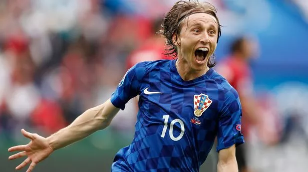

Scotland are out after the first knockout match after late substitute Scott McKenna bundled the ball into his own net with just 4 minutes remaining on the clock. The game went to extra-time where football legend Luka Modric score from distance giving Croatia the lead and a place in the quarter-finals. The squad can be proud of there performace becoming the first Scottish team to reach the knockout stages but there wil be the lingering thoughts of what could've been after letting go of the lead so late in the match.
